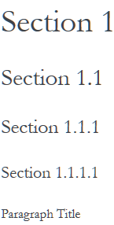

We use reStructuredText markup language to write the documentation and Sphinx generator to prepare it for the web publication at http://www.oroinc.com/doc/orocommerce. You can find more information about the syntax on the Sphinx website by reading reStructuredText Primer. The most important information is provided in the sections below.
Documentation source files are maintained in the dedicated github repository.
If you are willing to contribute — you are totally welcome. The information below should help you understand the documentation structure and topic organization, useful rst directives and a simple workflow that helps quickly publish a new topic.
Before submitting your documentation changes in a pull request, please sign our Contributor License Agreement (CLA). The CLA must be signed for any code or documentation changes to be accepted.
If you are just making a small change, you can use the Edit this file button directly in the GitHub UI. It will automatically create a fork of our documentation repository and allow for the creation and submission of a new pull request with your modifications once you are done editing:
For large volume of updates, fixes, and enhancements please use the following process:
Note
To build Sphinx documentation, set up a local Sphinx build environment:
- Install Sphinx.
- Install the required Sphinx extensions:
git submodule update --init.To test your changes before you commit them, run
make htmland check the generated documentation in the_builddirectory.
This section is intended to provide you with the basic information of simple text formatting using reStructuredText (reST) markup language. Just enough to update and create new documentation files in OroCommerce documentation.
For more information, please refer to the sphinx’s reStructuredText Primer and to the Quick reStructuredText by docutils.
The most complete information is available in the reStructureText specificaion.
The documentation is organized into the tree hierarchy of sections using toctree directive in the index.rst. Sections of the same level reside in the same folder which simplifies navigation and sibling reference.
Sample file structure:
1 2 3 4 5 6 7 8 9 10 11 12 13 14 15 | + user-guide:
+ img:
- Demo.png
- topic_1.rst
- topic_2.rst
- topic_3.rst
- index.rst
+ admin-guide:
- index.rst
+ integration
- email.rst
- LDAP.rst
+ img:
- Architecture.png
- index.rst
|
Use the following markup for the headings to split your topic into sections, subsections, and more granular bits:
Use an underline with =, -, ^, ~, ” to mark up the sections.
1 2 3 4 5 6 7 8 9 10 11 12 13 14 | Section 1
=========
Section 1.1
-----------
Section 1.1.1
^^^^^^^^^^^^^
Section 1.1.1.1
~~~~~~~~~~~~~~~
Paragraph Title
"""""""""""""""
|
Preview:
Preserve the same level of indentation for all lines of the paragraph. More information is available here.
Surround the text with one asterisk (*) for italic text, with two asterisks (**) for bold text, and with double back quotes (``) for Preformatted text. to use these symbols in the text without affecting the text style, escape them with the backslash (\).
To form a bullet list, start the line with *, +, or - followed by whitespace:
1 2 3 4 5 6 7 8 | * Item A
* Item B
- Item C
- Item D
+ Item E
+ Item F
|
Preview:
Item A
Item B
Item C
Item D
- Item E
- Item F
To form a numbered list, start the line with Arabic numerals (1,2,3), upper- or lowercase alphabet letters (A,B,C, or a,b,c), upper- or lowercase Roman numerals (I, II, III, or i, ii, iii). You can automatically enumerate the list by starting the lines with a hash sign (#).
Simple numbered list:
1 2 3 4 5 6 7 8 | 1. Item A
2. Item B
a) Item C
b) Item D
i. Item E
ii. Item F
|
Preview:
Item A
Item B
Item C
Item D
- Item E
- Item F
1 2 3 4 5 6 7 8 | 1. Item A
#. Item B
a) Item C
#) Item D
i. Item E
#. Item F
|
Preview:
Item A
Item B
Item C
Item D
- Item E
- Item F
Syntax in Rst: .. attention:: The message text.
Preview:
Attention
The message text.
Syntax in Rst: .. caution:: The caution message.
Preview:
Caution
The caution message.
Syntax in Rst: .. warning:: The warning message.
Preview:
Warning
The warning message.
Syntax in Rst: .. important:: The important message.
Preview:
Important
The important message.
1 2 3 4 5 6 7 | +------------+------------+-----------+
| Header 1 | Header 2 | Header 3 |
+============+============+===========+
| Cell 1.1 | Cell 1.2 | Cell 1.3 |
+------------+------------+-----------+
| Cell 2.1 | Cell 2.2 | Cell 2.3 |
+------------+------------+-----------+
|
Preview:
| Header 1 | Header 2 | Header 3 |
|---|---|---|
| Cell 1.1 | Cell 1.2 | Cell 1.3 |
| Cell 2.1 | Cell 2.2 | Cell 2.3 |
Temporarily, the information resides on Confluence.
Note
References to the section titles in the doc are enabled with the ‘sphinx.ext.autosectionlabel’ plugin.
Please follow the recommendations below when naming the new documenation file:
Create topic contents using Restructured Text format and save it following the File Naming Conventions.
To link a topic to the global documentation table of contents:
- Identify the best location for the reference to your new topic in the documentation structure.
- Move the newly created file to the selected folder.
- Append the relative document name (without the rst extension) to the toctree definition in the potential parent topic.
For example, when we create a new topic with additional information about price list management in the additional_pricelist_management_info.rst file. To include it into the document structure at the user-guide/pricing level, we’ll update the index.rst file in the user-guide/pricing directory like in the following example:
Before:
1 2 3 4 5 6 | .. toctree::
:maxdepth: 1
price_attributes
price_list_management
|
After:
1 2 3 4 5 6 7 8 | .. toctree::
:maxdepth: 1
price_attributes
price_list_management
additional_pricelist_management_info
|
Tip
If your are adding more than one topic and your new topics cover the same domain, consider grouping them into a folder. For better navigation, it is recommended to create a dedicated index.rst file with an overview and references to the topics in the new folder (using .. toctree:: directive). To attach your newly created group of topics into the general structure, add the reference to the index.rst to the appropriate loaction in the documetnation hierarchy (e.g. documentation-structure-and-topic-organization.rst and file_naming_conventions.rst may be saved to the user_guide/writing folder, may be added to the toctree of the dedicated user_guide/writing/index.rst. Finally, user_guide/writing/index.rst may be added into the user_guide/index.rst toctree to attach the newly created files into the global documentation structure).
Once you are ready, create a pull request in the OroCommerce documentation repository with changes from your forked repository. See Code Version Control for more information on using repository.
After documentation review, your changes will be merged to the OroCommerce documentation and will be published on the OroCommerce website.